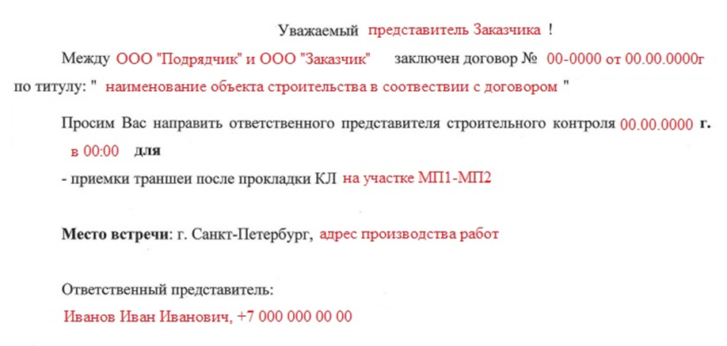

Как взаимодействовать со строительным контролем в процессе производства работ
В процессе производства работ СК выполняет следующие функции (СП48.13330.2019):
- Участие в освидетельствовании выполненных работ (включая скрытые), конструкций, инженерных сетей;
- Проверка качества готовой строительной продукции;
- Проверка процесса и результата производства работ в соответствии с проектом;
- Проверка технологии производства работ.
- Условия охраны труда на объекте
Согласно постановлению Правительства РФ от 21.06.2010 № 468 подрядчик должен уведомить Заказчика о дате проведения контрольных мероприятий не позднее чем за 3 рабочих дня. Для этого лучше всего на электронную почту направить письмо с указанием времени и даты предъявления работ.

После отправки электронной почты свяжитесь с СК и уточните, видел ли он данный документ. Если что-то изменилось в процессе производства работ (не успели доделать работы, или, наоборот, готовы предъявить раньше) – предупредите представителя СК
До завершения процедуры освидетельствования скрытых работ выполнение последующих работ запрещается. Но если СК Заказчика при этом не явился на предъявление работ, подрядчик может провести их и без него.
Даже если представитель СК Заказчика присутствовал на объекте и принял работы, попросите производителя работ, который непосредственно их выполняет и предъявляет, сделать фотоотчет, в котором будут указаны важные элементы и конструкции.
Лучше это делать с помощью специализированных программ, тогда на фото останутся координаты, дата и время фотофиксации. Это поможет на этапе проверки ИД.
Перед предъявлением работ уточните у СК, когда будут подписываться акты скрытых и выполненных работ: акты могут подписываться на этапе предъявления выполненных работ вместе с КС-2 или сразу после приемки (в таком случае, скорее всего) потребуют паспорта на применяемый материал и журналы.
В момент проверки работ на объекте у производителя должны быть на руках:
- Разрешительно-организационная документация
- Журналы общих работ, входного контроля и специальных работ.
- РД со штампом «В производство работ»
Также нужно учитывать, что даты работ в Журнале общих работ и АОСР (АВР) должны совпадать с датой приемки работ.